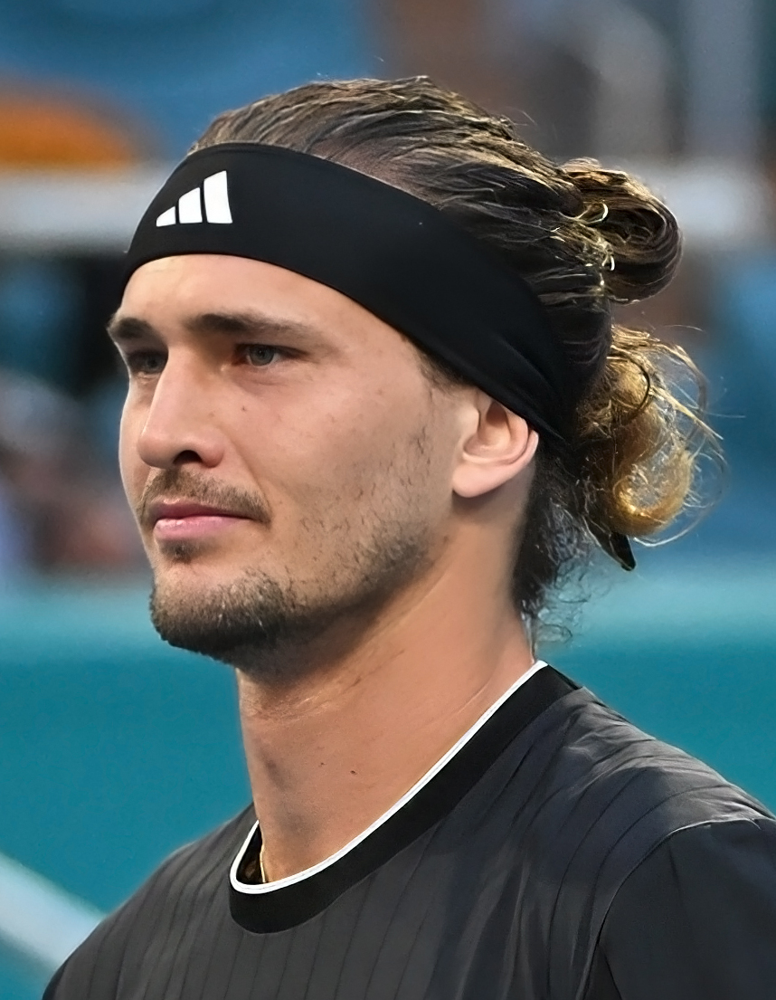

O ATP 500 de Viena entrou em sua fase decisiva depois de uma sequência de partidas que movimentou o tênis masculino na Wiener Stadthalle, na Áustria. A competição, disputada entre 26 de outubro e 1º de novembro, reune alguns dos principais jogadores do circuito em quadras rápidas cobertas, com confrontos importantes desde a primeira rodada.
O maior destaque foi Alexander Zverev. Primeiro cabeça de chave, o alemão superou Tallon Griekspoor nas oitavas de final, nesta quinta-feira, 29 de outubro, garantindo não apenas uma vaga nas quartas, mas também a chegada inédita ao topo do ranking mundial da ATP em 2 de novembro de 2026.
Zverev transforma campanha na Áustria em conquista histórica
Alexander Zverev chegou ao torneio austríaco com uma oportunidade especial: alcançar pela primeira vez a liderança do ranking da ATP.
A caminhada começou de maneira dramática contra o espanhol Martin Landaluce, de apenas 20 anos. Zverev venceu por 7/5, 3/6 e 7/6(11), em uma partida de três horas e cinco minutos na qual precisou salvar quatro match points, todos no tie-break do terceiro set.
Depois de escapar da eliminação, o alemão encontrou Tallon Griekspoor nas oitavas. Desta vez, resolveu o confronto em dois sets, com parciais de 6/4 e 7/5.
O resultado garantiu a ascensão de Zverev ao número 1 do mundo na atualização de 2 de novembro, ultrapassando Jannik Sinner. O alemão tornou-se, assim, o 30º jogador da história a alcançar a liderança do ranking masculino desde sua criação, em 1973, e o segundo representante da Alemanha, depois de Boris Becker.
A conquista também assegurou a Zverev a liderança do ranking de encerramento da temporada de 2026, ampliando o significado de sua passagem pelo torneio de Viena.
Alcaraz confirma favoritismo
Carlos Alcaraz iniciou sua participação enfrentando Karen Khachanov, adversário experiente e capaz de oferecer resistência em quadras rápidas. O espanhol venceu por 6/4 e 7/6(5), garantindo a classificação para as oitavas de final.
Na rodada seguinte, Alcaraz encontrou Nikoloz Basilashvili e construiu uma vitória por 6/1 e 7/6(11).
O primeiro set foi amplamente favorável ao espanhol. No segundo, entretanto, Basilashvili reagiu, recuperou uma quebra de serviço e levou a decisão ao tie-break.
Alcaraz precisou salvar quatro set points antes de fechar a partida, assegurando sua 60ª participação em quartas de final no circuito principal da ATP.
A vitória também ampliou para 23 sua sequência de triunfos consecutivos em torneios ATP 500.
Medvedev reage, enquanto Musetti e Mensik são eliminados
Daniil Medvedev também precisou enfrentar dificuldades para chegar às quartas de final.
Depois de estrear com vitória sobre Daniel Mérida por 7/6(5) e 6/1, o russo encontrou Cameron Norrie nas oitavas. O britânico venceu o primeiro set por 6/4, mas Medvedev reagiu com 6/3 e 7/6(1), garantindo a classificação.
Um dos resultados mais expressivos aconteceu no confronto entre Arthur Fery e Lorenzo Musetti. O britânico venceu por 6/4, 5/7 e 6/4, eliminando o italiano em uma partida de três sets.
Outra surpresa envolveu Adrian Mannarino. O francês, que veio do qualifying, derrotou Jakub Mensik por 6/4 e 7/5 e avançou para enfrentar Medvedev.
Tommy Paul também se destacou. Depois de eliminar Andrey Rublev na estreia, o norte-americano aplicou duplo 6/1 sobre Luciano Darderi, garantindo sua presença entre os oito melhores.
Resultados completos
A primeira rodada da chave principal contou com 16 confrontos de simples. Confira todos os resultados:
- 1. Alexander Zverev venceu Martin Landaluce
- 2. Tallon Griekspoor venceu Brandon Nakashima
- 3. Arthur Fery avançou contra Jacob Fearnley
- 4. Lorenzo Musetti venceu Frances Tiafoe
- 5. Flavio Cobolli venceu Grigor Dimitrov
- 6. Matteo Berrettini venceu Tomás Martín Etcheverry
- 7. Learner Tien venceu Luca Van Assche
- 8. Alex de Minaur venceu Tomás Machac
- 9. Jakub Mensik venceu Lukas Neumayer
- 10. Adrian Mannarino venceu Ignacio Buse
- 11. Cameron Norrie venceu Francisco Cerúndolo
- 12. Daniil Medvedev venceu Daniel Mérida
- 13. Tommy Paul venceu Andrey Rublev
- 14. Luciano Darderi venceu Matteo Arnaldi
- 15. Nikoloz Basilashvili venceu Jurij Rodionov
- 16. Carlos Alcaraz venceu Karen Khachanov
A rodada inicial já havia produzido eliminações de nomes conhecidos, como Rublev, Dimitrov, Khachanov e Tiafoe. Também evidenciou a capacidade de reação de jogadores como Zverev, Mannarino e De Minaur, que precisaram disputar três sets para avançar.
Resultados da segunda rodada
Nas oitavas de final, disputadas em 28 e 29 de outubro, os resultados foram:
- 1. Adrian Mannarino venceu Jakub Mensik
- 2. Alex de Minaur venceu Learner Tien
- 3. Daniil Medvedev venceu Cameron Norrie
- 4. Tommy Paul venceu Luciano Darderi
- 5. Carlos Alcaraz venceu Nikoloz Basilashvili
- 6. Arthur Fery venceu Lorenzo Musetti
- 7. Alexander Zverev venceu Tallon Griekspoor
O oitavo confronto colocou frente a frente Flavio Cobolli e Matteo Berrettini. No momento da consolidação dos resultados desta rodada, o duelo ainda não tinha vencedor definido.
Quartas de final: confrontos e chaveamento
As quartas de final foram programadas para sexta-feira, 30 de outubro, com as quatro partidas de simples.
O chaveamento após a vitória de Zverev apresentava a seguinte configuração, com horários de Brasília:
- 1. 9h30 — Adrian Mannarino x Daniil Medvedev.
- 2. 11h — Tommy Paul x Carlos Alcaraz.
- 3. 13h30 — Alexander Zverev x Arthur Fery.
- 4. 16h — Alex de Minaur x vencedor de Flavio Cobolli e Matteo Berrettini.
Todos os confrontos estão programados para a quadra central da Wiener Stadthalle, em Viena, na Áustria. Os horários representam o início mínimo previsto para cada partida, podendo sofrer alterações conforme a duração dos jogos anteriores.
O encontro entre Paul e Alcaraz colocava frente a frente dois jogadores que passaram pelas oitavas sem perder sets. Já a partida entre Zverev e Fery reunia o principal cabeça de chave e um dos responsáveis pelas maiores surpresas da competição.
Medvedev, por sua vez, enfrentaria Mannarino depois de uma classificação conquistada em três sets, enquanto o francês chegava motivado pela eliminação de Mensik.
As quartas de final terão transmissão ao vivo para o Brasil pela ESPN2 e Disney+.
O peso do ATP 500 de Viena no calendário do tênis
O Erste Bank Open integra a categoria intermediária entre os torneios ATP 250 e os eventos Masters 1000, dentro do circuito regular masculino.
A competição austríaca é disputada em quadra dura coberta, característica que exige adaptação a condições diferentes das encontradas em torneios ao ar livre.
O posicionamento de Viena na parte final da temporada também aumenta sua importância. Além da disputa pelo título, os resultados podem influenciar a classificação mundial, as posições entre os cabeças de chave de competições seguintes e a corrida pelas vagas no ATP Finals.
Na edição de 2026, esse peso ficou especialmente evidente com a campanha de Zverev. Sua classificação às quartas representou uma conquista que ultrapassou os limites do próprio torneio: a garantia de chegar ao primeiro lugar do mundo pela primeira vez.
Para Medvedev e De Minaur, a participação também fazia parte de uma fase importante da disputa por posições na corrida de classificação para o ATP Finals.
Mais do que uma sequência de resultados, as primeiras rodadas de Viena mostraram por que os torneios ATP 500 ocupam um espaço importante no calendário: reúnem jogadores de alto nível, oferecem confrontos difíceis desde a estreia e podem produzir acontecimentos com consequências que ultrapassam a conquista de um título.
Em 2026, essa combinação ficou marcada principalmente pela ascensão histórica de Alexander Zverev ao topo do ranking, em uma edição que também abriu espaço para surpresas e confrontos de alto nível nas quartas de final.